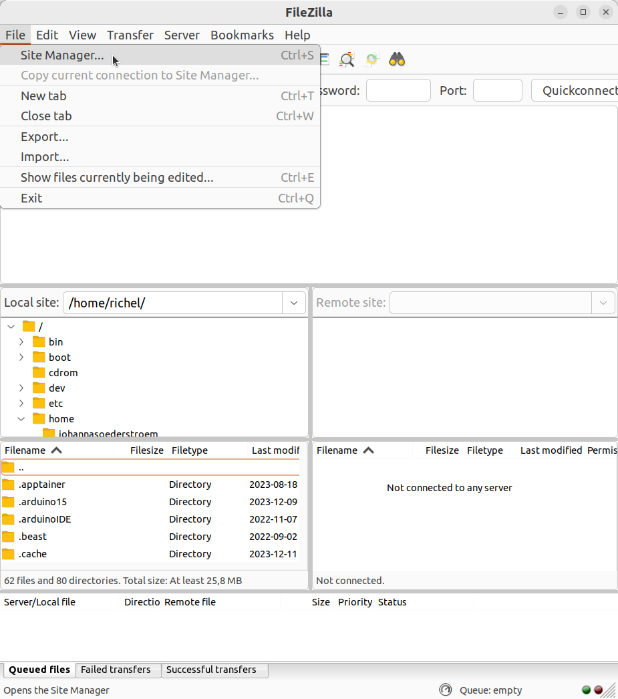
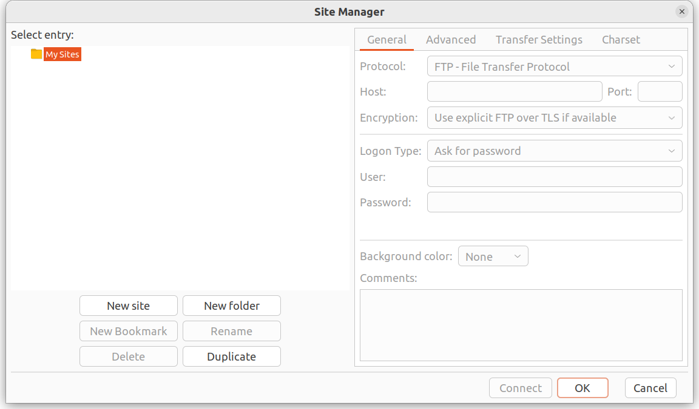
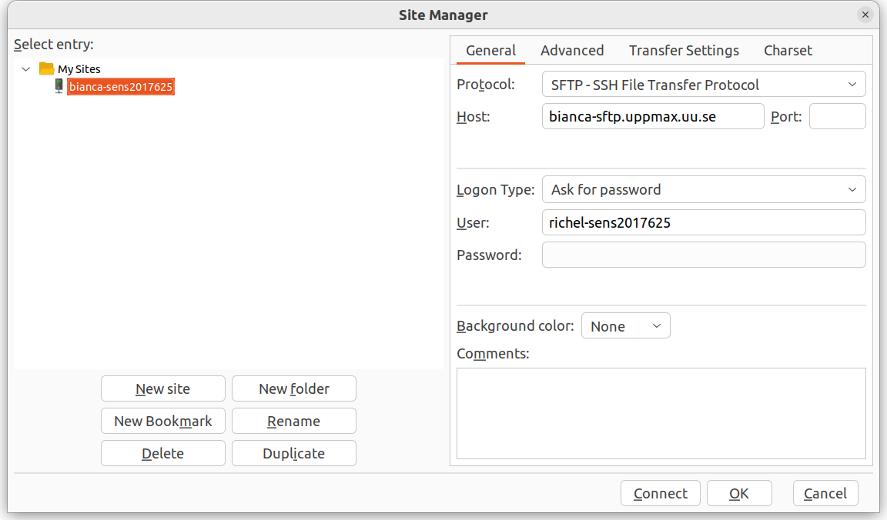
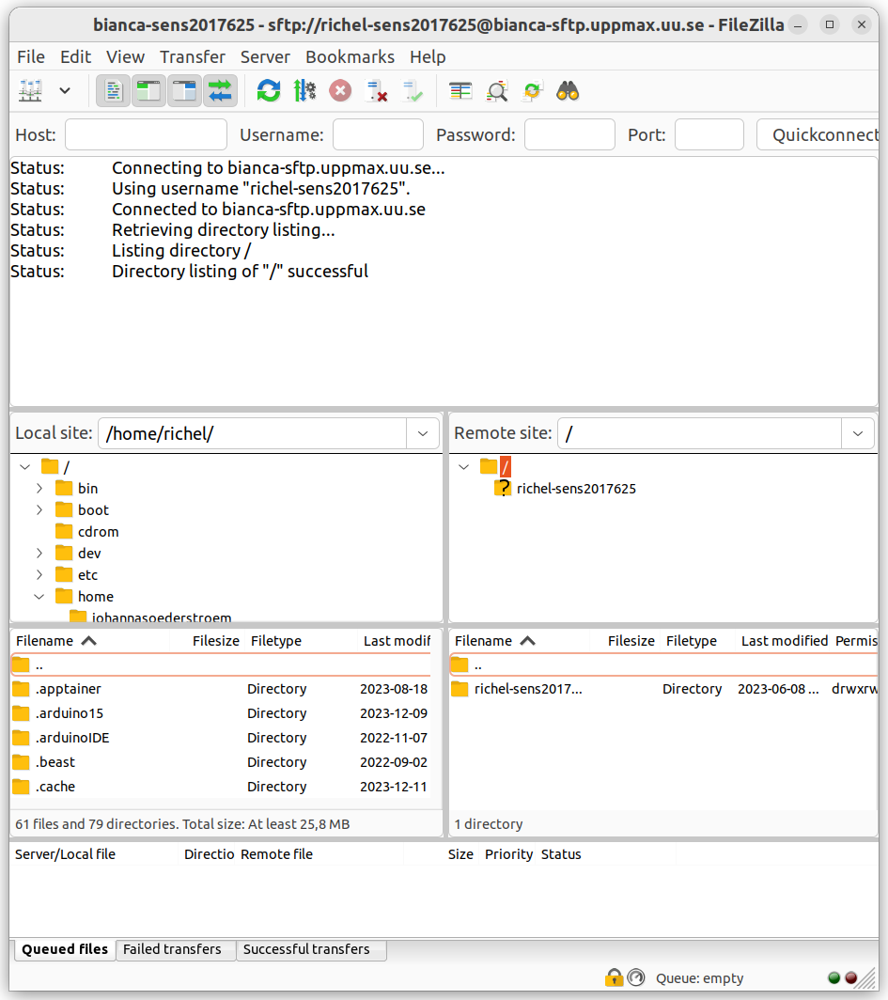
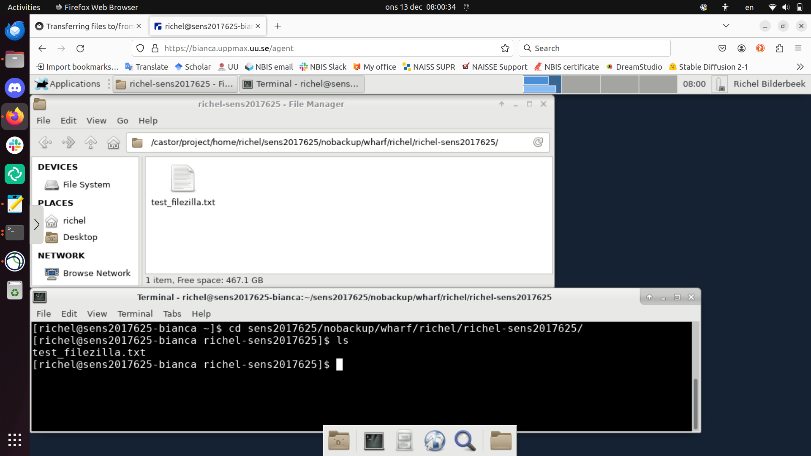
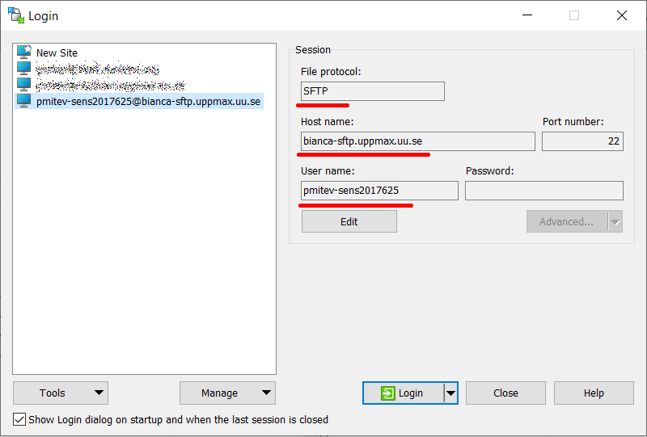

File transfer to/from Bianca, using a graphical tool¶
FileZilla connected to Bianca
Overview¶
As a user, we need to transfer files between our local computer and Bianca. The many ways to transfer files to/from Bianca are discussed here. On this page, we learn how to transfer files to Bianca using a graphical tool/program.
There are constraints on which programs we can use, due to Bianca being an HPC cluster for sensitive data. Details are described in 'Bianca's constraints'.
When using such a graphical tool, one needs to be inside of SUNET. FileZilla is a tool that is easy to setup. The full procedure is described in 'Using FileZilla'.
The files you transfer will end up in your so-called wharf folder.
Where to find this folder is shown in the section 'Where do my files end up?'.
Bianca's constraints¶
flowchart TD
%% Give a white background to all nodes, instead of a transparent one
classDef node fill:#fff,color:#000,stroke:#000
%% Graph nodes for files and calculations
classDef file_node fill:#faf,color:#000,stroke:#f0f
classDef calculation_node fill:#aaf,color:#000,stroke:#00f
subgraph sub_inside[IP inside SUNET]
subgraph sub_bianca_shared_env[Bianca shared network]
subgraph sub_bianca_private_env[The project's private virtual project cluster]
login_node(login/calculation/interactive node):::calculation_node
files_in_wharf(Files in wharf):::file_node
files_in_bianca_project(Files in Bianca project folder):::file_node
end
end
user(User)
user_local_files(Files on user computer):::file_node
end
%% Shared subgraph color scheme
%% style sub_outside fill:#ccc,color:#000,stroke:#ccc
style sub_inside fill:#fcc,color:#000,stroke:#fcc
style sub_bianca_shared_env fill:#ffc,color:#000,stroke:#ffc
style sub_bianca_private_env fill:#cfc,color:#000,stroke:#cfc
user --> |logs in |login_node
user --> |uses| user_local_files
%% As of 2023-12-22, using `**text**` for bold face, does not render correctly
%% user_local_files <== "`**transfer files**`" ==> files_in_wharf
user_local_files <== "transfer files" ==> files_in_wharf
login_node --> |can use|files_in_bianca_project
login_node --> |can use|files_in_wharf
files_in_wharf <--> |transfer files| files_in_bianca_projectOverview of file transfer on Bianca, when using a graphical tool. The purple nodes are about file transfer, the blue nodes are about 'doing other things'. In this session, we will transfer files between 'Files on user computer' and 'Files in wharf' using a graphical tool, e.g. FileZilla
Bianca is an HPC cluster for sensitive data. To protect that sensitive data, Bianca has no direct internet connection. This means that files cannot be downloaded directly.
What is an HPC cluster again?
What an HPC cluster is, is described in general terms here.
Instead, one needs to learn one of the many ways to do secure file transfer.
Here, we show how to transfer files using a graphical tool called FileZilla.
In general, one can pick any graphical tools with these constraints:
- the tool must support SFTP
- the tool must not store a password
Whatever tool one picks, it must do secure file transfer. For secure file transfer, Bianca supports the SFTP protocol. So, for secure file transfer to Bianca, one needs a tool that supports SFTP.
Use SFTP ... and why SCP will never work
You must use SFTP.
However, some users find tools that support another protocol called 'SCP'. We understand the confusion, due to the many technical and abbreviated terms.
Only SFTP will work.
Whatever tool one picks, additionally, the tool must not store a password.
Due to security reasons, one needs to connect to Bianca using a password
and a two-factor authentication number (e.g. VerySecret123456).
If a tool stores a password, that password will be valid for only one session.
One tool that can be used for file transfer to Bianca is FileZilla, which is described in detail below. The extra materials at the bottom of this page contain other tools.
Using FileZilla¶
The FileZilla logo
Would you like a video?
If you like to see how to do file tranfer from/to Bianca using FileZilla, watch the video here
FileZilla is a secure file transfer tool that works under Linux, Mac and Windows.
To transfer files to/from Bianca using FileZilla, do:
- Get inside SUNET
Forgot how to get within SUNET?
See the 'get inside the university networks' page here
- Start FileZilla
- From the menu, select 'File | Site manager'
Where is that?
It is here:

The FileZilla 'File' menu contains the item 'Site manager'
- Click 'New site'
Where is that?
It is here:

- Create a name for the site, e.g.
bianca-sens123456. - For that site, use all standards, except:
- Set protocol to 'SFTP - SSH File Transfer Protocol'
- Set host to
bianca-sftp.uppmax.uu.se - Set user to
[username]-[project], e.g.richel-sens123456
How does that look like?
It looks similar to these:


Storing a password is useless
Because Bianca holds sensitive data, there is need to use the UPPMAX two-factor authentication code every time you login. Due to this, storing a password is hence useless
- Click 'Connect'
- You will be asked for your password with two-factor identification, hence
type
[your password][2FA code], e.g.VerySecret123456
Now you can transfer files between your local computer and Bianca.
How does that look like?
It looks like this:

Where do my files end up?¶
They end up in your personal wharf folder.
Its location is at /home/[user_name]/[project_name]/nobackup/wharf/[user_name]/[user_name]-[project_name],
for example, at /home/sven/sens123456/nobackup/wharf/sven/sven-sens123456.
How does that look like?
It looks like this:

Extra material¶
WinSCP¶
WinSCP is a secure file transfer tool that works under Windows.
To transfer files to/from Bianca using WinSCP, do:
- Get inside SUNET
Forgot how to get within SUNET?
See the 'get inside the university networks' page here
- Start WinSCP
- Create a new site
- For that site, use all standards, except:
- Set file protocol to 'SFTP'
- Set host name to
bianca-sftp.uppmax.uu.se - Set user name to
[username]-[project], e.g.richel-sens123456
How does that look like?
It looks like this:

File transfer overview¶
flowchart TD
%% Give a white background to all nodes, instead of a transparent one
classDef node fill:#fff,color:#000,stroke:#000
%% Graph nodes for files and calculations
classDef file_node fill:#fcf,color:#000,stroke:#f0f
classDef calculation_node fill:#ccf,color:#000,stroke:#00f
classDef transit_node fill:#fff,color:#000,stroke:#fff
subgraph sub_inside[IP inside SUNET]
subgraph sub_bianca_shared_env[Bianca shared network]
subgraph sub_bianca_private_env[The project's private virtual project cluster]
login_node(login/calculation/interactive node):::calculation_node
files_in_wharf(Files in wharf):::file_node
files_in_bianca_project(Files in Bianca project folder):::file_node
end
end
user(User)
user_local_files(Files on user computer):::file_node
files_on_transit(Files posted to Transit):::transit_node
files_on_other_clusters(Files on other HPC clusters):::file_node
end
%% Shared subgraph color scheme
%% style sub_outside fill:#ccc,color:#000,stroke:#ccc
style sub_inside fill:#fcc,color:#000,stroke:#fcc
style sub_bianca_shared_env fill:#ffc,color:#000,stroke:#ffc
style sub_bianca_private_env fill:#cfc,color:#000,stroke:#cfc
user --> |logs in |login_node
user --> |uses| user_local_files
user_local_files <--> |transfer files|files_in_wharf
user_local_files <--> |transfer files|files_on_transit
files_on_transit <--> |transfer files|files_in_wharf
files_on_transit <--> |transfer files|files_on_other_clusters
login_node --> |can use|files_in_bianca_project
login_node --> |can use|files_in_wharf
files_in_wharf <--> |transfer files| files_in_bianca_projectOverview of file transfer on Bianca The purple nodes are about file transfer, the blue nodes are about 'doing other things'.